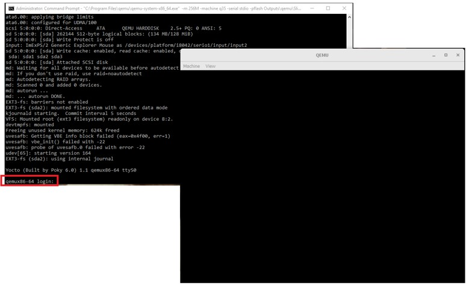

Exercise 4 - Boot to Linux¶
Note
In this exercise, we’ll learn how to boot to Linux.
You can execute SBL with the following steps:
Working on Command Prompt Shell window
Rebuild SBL by using the following command:
python BuildLoader.py build qemu
Completion: you will see
Done [qemu]on the screen after compile completedExecute SBL on QEMU by using the following command:

Windows:
"C:\Program Files\qemu\qemu-system-x86_64.exe" -m 256M -machine q35 -serial stdio -pflash Outputs\qemu\SlimBootloader.bin -drive id=mydisk,if=none,file=..\Misc\QemuImg\QemuSata.img,format=raw -device ide-hd,drive=mydisk -boot order=dLinux:
qemu-system-x86_64 -m 256M -machine q35 -serial mon:stdio -nographic -pflash Outputs/qemu/SlimBootloader.bin -drive id=mydisk,if=none,file=../Misc/QemuImg/QemuSata.img,format=raw -device ide-hd,drive=mydisk -boot order=d
Tip
If run QEMU in Windows, Ctrl+Break to exit.
The login to Linux, type:
rootTo shutdown Linux, type:
halt